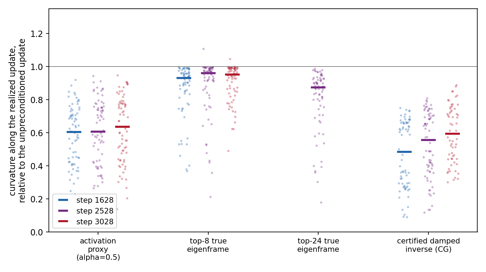
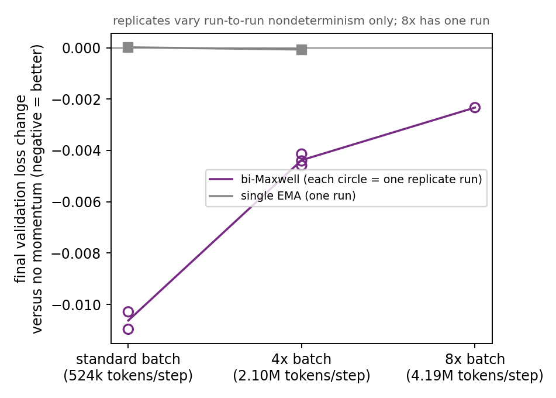

How much Newton is already in momentum?
Working report · 31 August 2026 · central regression complete
Momentum uses the time history of gradients. Newton's method uses their spatial curvature. These appear to be different sources of information, but edge-of-stability dynamics connect them: sharp directions often oscillate quickly. A temporal filter can therefore imitate part of an inverse Hessian without ever measuring a Hessian.
Can one shared momentum kernel reconstruct the damped-Newton direction across many curvature directions and parameter matrices? The reconstruction error is the part of Newton that momentum cannot supply.
We now have the answer. A residual-verified damped inverse roughly halves curvature along Muon's update and costs a median of three Hessian–vector products at each refresh. A shared temporal kernel reconstructs essentially none of its anisotropic correction on held-out matrices or training states. Momentum and damped Newton are doing different jobs.
1. Put time and curvature in the same coordinates
At one training state, let H be the true Hessian. Its eigenvector yi has curvature λi. Project the current gradient and the 128 recorded past gradients onto that direction:
The sequence ai(0), …, ai(128) tells us how the gradient evolved along one measured curvature direction. A kernel with taps cτ turns that history into one coefficient:
Separately, start with the recorded momentum estimate z and compute a damped Newton direction p:
Here ρ is damping; λ is reserved for curvature. The target coefficient bi is what damped Newton wants along direction yi. We fit one set of taps c to reproduce all the bi values across curvature directions and matrices.
This is a demanding test. The kernel sees time but not λi. It can reproduce inverse curvature only when temporal behavior predicts curvature consistently across the model.
2. The percentage has two meanings
The literal kernel-expressible share is one minus the held-out least-squares residual:
Strong damping makes much of the inverse look like a common scalar. A lag-zero tap can recover that scalar, and matrix sign would discard it anyway. We therefore also remove each matrix's best scalar multiple of z before fitting. The resulting quantity, Xaniso, measures how much of Newton's direction-dependent correction is present in the time history.
We predicted that the kernel would explain 15–40% of the anisotropic correction. It did not. The held-out share was near zero when positive and often negative.
The table reports residual fraction R; the expressible share is X = 1 − R. Thus R = 1 means the fitted kernel is no better than predicting zero. Values above one mean that transferring the fitted taps to an unseen matrix or checkpoint makes the prediction worse.
| Held-out unit | Target | Step 1628 | Step 2528 | Step 3028 |
|---|---|---|---|---|
| Checkpoint | Raw Newton vector | R 1.72 X −0.72 | R 0.65 X 0.35 | R 4.38 X −3.38 |
| Checkpoint | Anisotropic correction | R 0.91 X 0.09 | R 0.72 X 0.28 | R 2.21 X −1.21 |
| Matrix | Raw Newton vector | R 1.40 X −0.40 | R 0.85 X 0.15 | R 3.19 X −2.19 |
| Matrix | Anisotropic correction | R 1.86 X −0.86 | R 1.19 X −0.19 | R 4.04 X −3.04 |
The kernel-expressible share of damped Newton is approximately zero. A shared 129-tap kernel does not transfer the anisotropic inverse-curvature map across matrices or training states; negative shares show that it frequently transfers worse than the zero predictor. Lag-zero-only fits are comparable or better in most splits.
The scale quotient and train/test splits were registered before the result. Other normalizations may be worth studying, but they cannot replace this failed test after the fact.
3. Actual damped Newton is both effective and cheap here
The inverse solves use the true Hessian through Hessian–vector products. At three training checkpoints, 72/72, 70/72, and 66/72 matrix solves reached the residual threshold. The median solve required three iterations: three Hessian–vector products per refresh.
The polar update changed very little by cosine—approximately 0.99—yet the certified per-matrix median curvature ratio was 0.484, 0.555, and 0.593 at the three checkpoints. The correct interpretation is geometric: a small rotation can remove a large projection onto the sharpest directions. Cosine alone misses the effect.
A residual-verified damped inverse approximately halves curvature along Muon's realized update at a cost low enough to consider during training.

The deep eigenframe measurement explains the gap. Median top curvature is about 27,000, while curvature along momentum's leading direction is about 5,000. Each of the 24 sharpest true eigendirections receives only about 0.5% of the update mass. Most of the useful inverse-curvature action lies outside that sharp subspace.
Breakdown events rise across training—0, 4, then 11—which indicates that a fixed shift ρ stops dominating the negative spectrum late in training. Damping and solver choice must respond to the measured state. A broken solve is excluded rather than frozen and called Newton.
4. Batch size changes which momentum is useful
A matched continuation from step 2000 compared no momentum, a single EMA, and bi-Maxwell at the standard batch and at four times as many tokens per step. The single EMA was indistinguishable from no momentum at both batch sizes. Bi-Maxwell improved validation loss by about 0.0103 at the standard batch and 0.0044 at four times the batch.
In this experiment, the benefit came from the two-rate kernel shape rather than generic exponential momentum, and that benefit roughly halved when the batch grew fourfold.

This favors a denoising contribution: more tokens reduce the value of the expressive temporal filter. The benefit does not vanish, so the experiment does not establish that denoising is the kernel's only role. It does establish that “momentum versus no momentum” is the wrong comparison here. Kernel shape is the active variable.
The result supplies the minibatch dependence required by the optimizer. Let St be directional signal-to-noise ratio measured at the actual batch size, and let αt control how much residual Newton correction is trusted:
At low curvature-estimation SNR, α approaches zero and the spatial correction becomes passthrough. At high reliability, α approaches one. The temporal kernel may move in the opposite direction: longer or more expressive memory becomes more useful as gradient SNR falls.
5. “Apply the remaining Newton” has an exact meaning
Let pK be the best direction reconstructible by a temporal kernel. Define the missed Newton component by
The proposed update is msign(pK + αr). This avoids dividing by a small or sign-changing kernel coefficient. It also makes the boundary cases transparent:
- When curvature is isotropic, damped Newton differs from passthrough only by common scale. The anisotropic residual is zero, and a stationary deterministic problem needs only the lag-zero gradient.
- When too few tokens are available to estimate curvature, α tends to zero. The uncertain Newton correction switches off.
- When curvature is reliable and the kernel explains little of it, α tends to one and the inverse solve supplies the missing spatial correction.
There are two meaningful orders. One can filter the gradient history and apply the current inverse Hessian, or apply the contemporaneous inverse Hessian to each past gradient and then filter. These orders agree when the Hessian is fixed. Their difference measures curvature drift over the kernel's memory window, so refresh cadence and kernel memory must be chosen together.
6. What the result decides
| Held-out anisotropic share | Interpretation | Design consequence |
|---|---|---|
| High | Temporal dynamics reliably encode inverse curvature. | Use the learned kernel and apply only a low-rank or weak residual correction. |
| Intermediate | Momentum recovers coarse curvature classes but not the full spectrum. | Jointly schedule kernel memory and a measured residual correction. |
| Low — observed | Temporal estimation and inverse curvature are mostly independent. | Choose the kernel for prediction/denoising and retain a full damped inverse. |
The experiment rules out the hoped-for scalar compensation law: there is no stable “momentum already supplies X% of Newton” coefficient to top up. The simpler design is modular. Choose the temporal kernel for prediction and denoising; estimate inverse curvature separately; use measured reliability to gate the full anisotropic correction.
The batch experiment uses one fork, a 750-step horizon, and no learning-rate rescaling across batch sizes. Its reruns reuse the same sequential data stream and therefore measure run-to-run nondeterminism, not data-distribution robustness. The expressibility regression is held out across matrices and checkpoints but uses one 129-tap linear kernel class and the registered per-matrix normalization; its conclusion is about that operational definition.